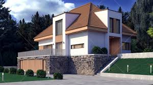
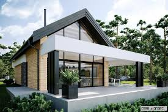
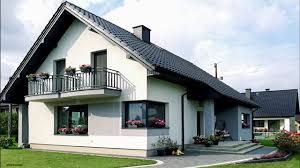
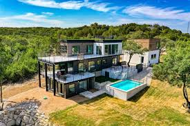
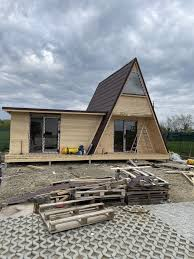
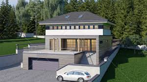

Motto: Your house, Our priority
Description

Welcome to the genesis of your dream home – where imagination meets craftsmanship, and aspirations take shape.
Here, amidst the raw potential of an empty plot, we lay the cornerstone of your future sanctuary.
With each swing of the hammer and every calculated measurement, we embark on a journey of creation, building not just a house, but a haven – a space uniquely tailored to your vision and lifestyle.
As the foundation is poured and the first walls rise, we invite you to witness the birth of something extraordinary.
Join us as we breathe life into your architectural dreams, one brick at a time. Welcome to the beginning of your home's story.
Steps
Home is the most important place in our lives, and buying a new home is one of the most exciting decisions you can make; however, it can also be a bit nerve-wracking if you’re unsure about how your home will be built.
Have no fear, because we are here to walk you through every step! With the knowledge of our construction process, you and your family can have the peace of mind and confidence that you’re making the best possible choice by building a new home.
From avoiding the costly renovations and repairs many resale homes need, to having a home that is uniquely their own, there are many great reasons to build a new home.
Do not forget the essential steps you'll need to take before the construction crew can get to work!
New home construction contains 8 stages:
- Preparing the Homesite
- Laying the Foundation
- Framing the Home
- Installing HVAC, Plumbing, and Electrical
- Adding the Insulation
- Affixing the Drywall
- Inserting the Interior and Exterior Finishes
- Completing the Final Inspection and Walkthrough
1. Preparing the Homesite
You chose the perfect homesite and floorplan, but before construction on your new home can begin, the land where it will sit must be prepared. The lot must be surveyed and utility access has to be set up.
2. Laying the Foundation
Now that the lot has been prepped, we can start building your home! A concrete foundation is poured, which is then reinforced with steel rods prior to drying. Once it hardens, the foundation is sprayed with a waterproofing substance to ensure it will be dry for many years to come.
There are several types of foundations, and the geographic location of your home often determines which type is used. The most commonly seen are slab foundations and basement foundations; depending on where you’re building, M/I has options for both!
Before moving on to the next phase in the construction process, a city inspector will evaluate the quality of the foundation.
3. Framing the Home
This is where it starts to get really exciting! With the wooden framing, you can literally see your home taking shape and notice that excellent floorplan you selected come to life.
There’s quite a lot involved in this step:
- Floor joists are installed as well as the subfloor
- Windows and doors are also installed
- A house wrap is put over the exterior to prevent water and moisture from getting into the home
4. Installing HVAC, Plumbing, and Electrical
Your home is now dried-in, which means the interior is completely protected from rain and moisture. Now the major systems, including plumbing, electrical, and HVAC (heating, ventilation, and air conditioning), can be installed.
Once these components have been installed, inspectors proof them individually, making sure the home continues to be of the highest quality possible.
5. Adding the Insulation
The next step is to install insulation, which will keep your home warm in the winter.
There are many types of insulation, and some are better suited than others, depending on the location’s climate.
Energy efficiency is important to reduce your energy costs (which means saving you money!), so the home must be properly insulated from the roof all the way down to the foundation.
The list of places needing insulation is extensive, but the biggest and most commonly thought of areas include the exterior walls, the attic, any floors above the garage, and the foundation.
6. Affixing the Drywall
After your home has been properly insulated, the next step is to put up drywall on the walls and ceiling. Using specialty screws, brackets, and joint compound (commonly referred to as drywall mud), our construction crew will hang drywall to create the rooms in your home.
During this process, they will also cut out holes for lighting fixtures and electrical outlets. Once completed, the drywall will be primed with sealer so paint can be absorbed evenly across the entire surface area.
7. Inserting the Interior and Exterior Finishes
We're getting to the final stage of building your dream home! The interior will be completed in this stage, and you’ll love seeing the final essential touches being installed.
Everything from hardwood flooring and carpeting to countertops and cabinets, as well as doors and light fixtures are added. For the exterior, we'll make sure your driveway has been paved and sod has been added to your yard.
8. Completing the Final Inspection and Walkthrough
Congratulations: your new home is nearly done and ready for you to move into and fall in love with!
Models
Discover a collection of meticulously crafted house models, each designed to cater to diverse tastes and lifestyles. From cozy cottages exuding charm to sleek modern marvels embracing minimalist elegance, our range of models offers something for every discerning homeowner. Whether you crave the intimacy of a bungalow, the sophistication of a townhouse, or the spaciousness of a villa, our diverse portfolio ensures that your ideal home awaits.
Explore our selection and find the perfect embodiment of your aspirations.
Welcome home.
 
Photos

   
Reviews from our clients:
"PlaCo provided exceptional service and helped us build our dream house. Highly recommended!"
"The team at PlaCo is professional, efficient, and delivered outstanding results. Thank you!"
"PlaCo's expertise and attention to detail are unparalleled. They exceeded our expectations."
Contact
Tel: 0712 345 678
Facebook: PlaCo Houses
email: placohouses@mail.com